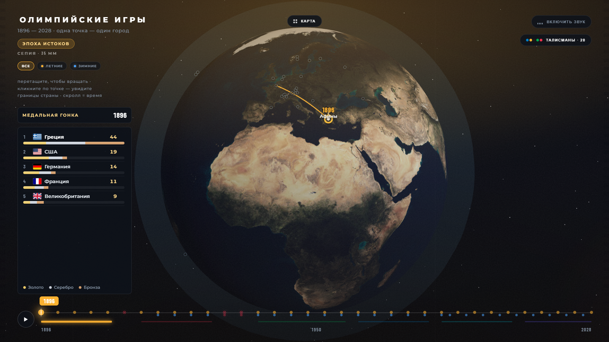
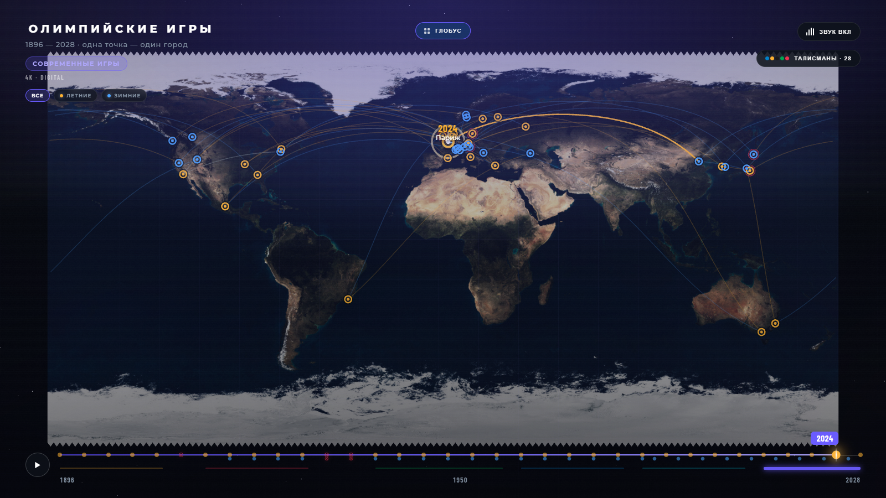
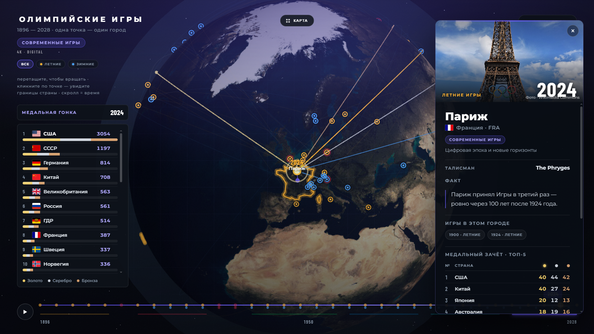

История разрознена
Даты, города, медали и талисманы живут в разных источниках. Нет одной точки входа.
Министерство образования Омской области
Бюджетное профессиональное образовательное учреждение Омской области
«Колледж инновационных технологий, экономики и коммерции»
ЦМК ФИЗИЧЕСКОЙ КУЛЬТУРЫ, БЖД И ТУРИЗМА
ПРОЕКТ
на тему: «Интерактивное путешествие сквозь историю Олимпийских игр»
Выполнил:
студент гр. 41 ИСР
И.О. Колыванов
М.А. Растегаев
Руководитель:
Я. В. Козка, Н.И. Шуваева
Омск, 2026
Проект · 1896–2028
Одна 3D-сцена: глобус, карта, время, эпохи, медали и талисманы. Вся история современных Игр — не в таблице, а в движении.

Почему · актуальность
Олимпийская история существует, но она разорвана на статьи, таблицы, видео и архивные фотографии. В этом виде она плохо запоминается и почти не работает как общий культурный опыт.
Даты, города, медали и талисманы живут в разных источниках. Нет одной точки входа.
Молодой аудитории знакомы последние Игры, но непонятно, как они связаны с эпохами XX века.
Олимпиада соединяет страны, технологии, медиа и людей. Об этом стоит говорить визуально.
Проект превращает набор фактов в маршрут: от Афин-1896 до Лос-Анджелеса-2028.
Цель · задачи
Разработать интерактивное веб-приложение, которое представляет историю современных Олимпийских игр 1896–2028 как непрерывное путешествие по глобусу и времени.
История современных Олимпийских игр и способы её цифровой визуализации.
Интерактивное веб-приложение «Интерактивное путешествие сквозь историю Олимпийских игр».
Собрать и проверить данные 1896–2028.
Проанализировать существующие источники и аналоги.
Спроектировать сценарий путешествия и интерфейс.
Реализовать 3D-глобус и плоскую карту.
Добавить таймлайн, эпохи, карточки, медали и талисманы.
Протестировать и подготовить защиту проекта.
Сложность · почему не просто
Летние, зимние, отменённые Игры, разные форматы и правила.
История, медали, фото и талисманы лежат в разных системах.
Глобус, маршруты, камера и текстуры должны работать плавно.
Нужно совместить lat/lon, границы стран и плоскую проекцию.
Сцена должна оставаться читаемой и управляемой на телефоне.
Исторические фото, тексты и медиа требуют аккуратного отбора.
Аналоги · что уже есть
Решения полезны по отдельности, но не дают одного интерактивного путешествия по всей истории.
Много фактов и таблиц, но нет визуального маршрута и общего сценария.
Сильный современный слой, но история не собрана в одну сцену.
Красивые материалы, но нет глобуса, таймлайна и медальной динамики.
Зритель смотрит, но не выбирает город, эпоху и слой данных.
Наш проект соединяет карту, время и контент в один интерактивный сценарий.
Аудитория · сценарии
Школьникам и студентам — для истории, МХК и физкультуры.
Преподавателям — как визуальная опора для урока.
Болельщикам — чтобы увидеть контекст любимых Игр.
Организаторам и авторам медиапроектов — как пример интерактивной подачи.
«Где и когда проходили Игры?» — глобус и таймлайн.
«Что было в этом году?» — карточка Игр и медали.
«Как менялись эпохи?» — атмосфера и главы.
«Покажи красиво на уроке» — автопутешествие и QR.
Мы не выдумываем статистику: сценарии собраны из логики проекта и его интерфейса.
Интерфейс · UI/UX
Глобус и карта — две проекции одних данных, а не два разных приложения.
Скролл, таймлайн и play двигают историю; камера следует за огнём.
Город открывает карточку: фото, факт, талисман, медали, галерея.
Сепия, ч/б, ТВ-скан-линии и digital меняют настроение сцены.

Стек · технологии
Интерфейс и состояние сцены.
Сборка и быстрый dev-цикл.
3D-сцена как React-дерево.
Глобус, камера, линии, текстуры.
Перелёты, морфинг, карточки, эпохи.
Эмбиент, меняющийся по эпохам.
Границы, координаты, данные Игр.
Презентация и защита проекта.
Модули · функциональность
Одна сцена, две проекции, границы стран, маркеры городов.
Скролл и play, сезоны, остановки, переходы между годами.
Сепия, кинохроника, ТВ, цифровой вид и главы периодов.
Фото, факт, талисман, история, галерея и соседние Игры.
Топ-5 стран, медальная гонка, созвездия от города-хозяина.
Галерея, фильтры, детали и переход к конкретным Играм.
Механики · почему интересно
Play ведёт время, огонь летит между городами, камера следит за ним.
Исторические дуги, активная линия и следующая остановка видны заранее.
Глобус разворачивается в карту — те же координаты, другая проекция.
QR, демо-режим и переход из презентации в приложение без прелоадера.

Результат · итоги
Собрано 61 выпуск Игр 1896–2028.
Реализованы глобус, карта, таймлайн и эпохи.
Добавлены карточки, медали и 28 талисманов.
Собрана адаптивная мобильная версия.
Подготовлены демо-режим, QR и презентация.
Полный медальный датасет и больше стран.
Серверная часть и CMS для контента.
PWA и офлайн-режим для музеев и уроков.
Английская версия и новые визуальные режимы.
Проверено на desktop и mobile; сборка и переход в приложение работают.
Спасибо · вопросы
Приложение: olympic-game.ru
Презентация: tulenka22.github.io/olympic-game-presentation